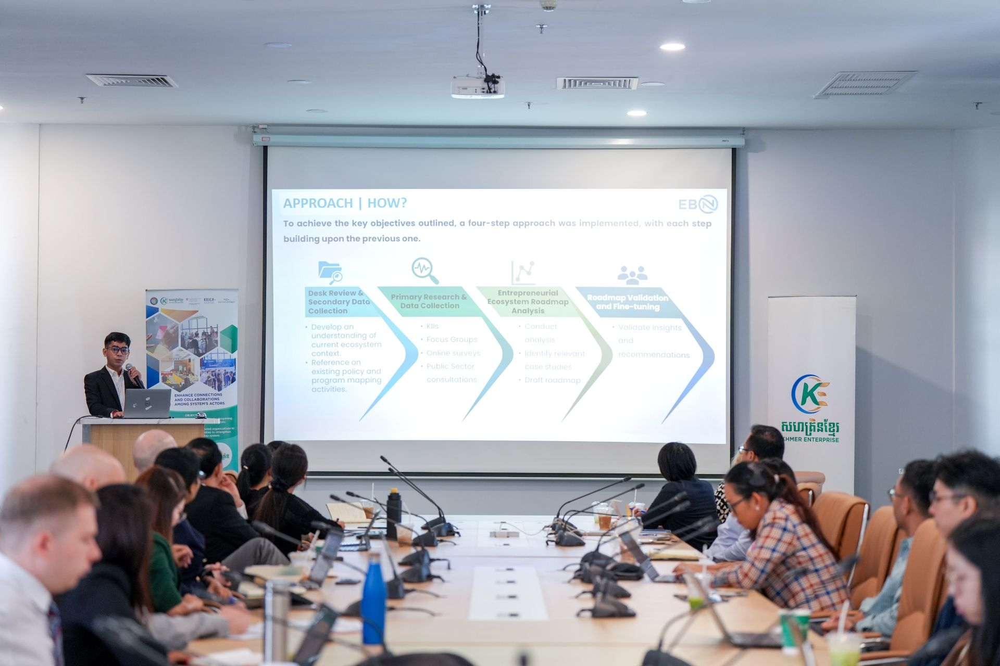
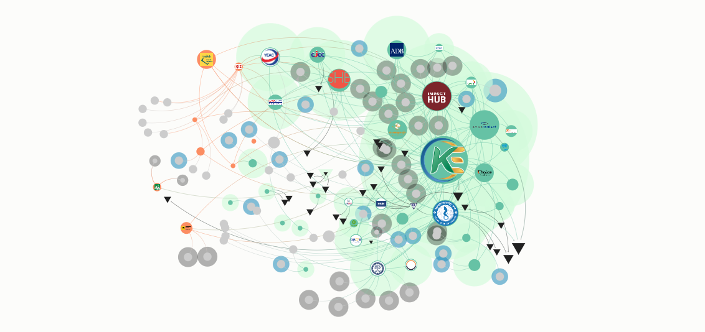
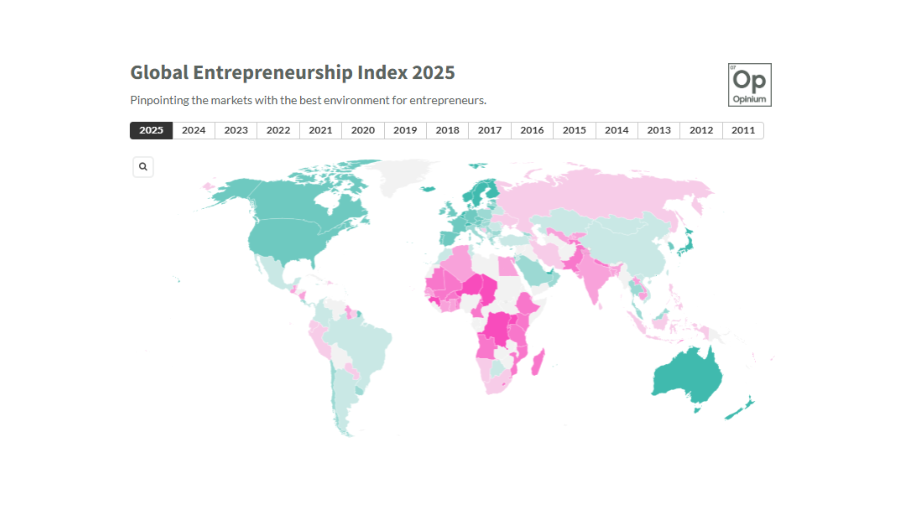
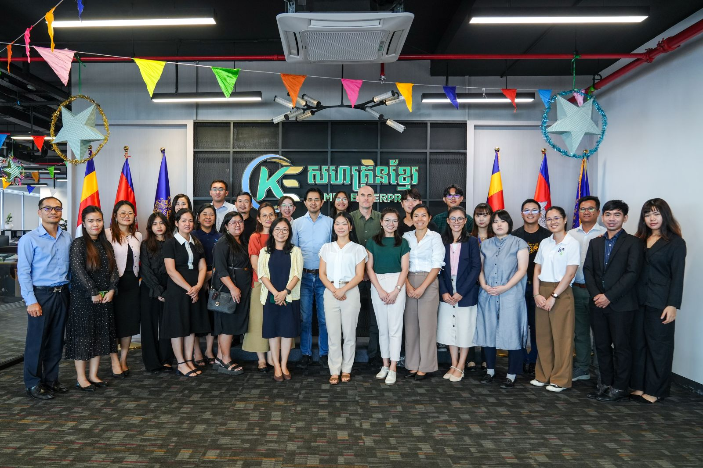
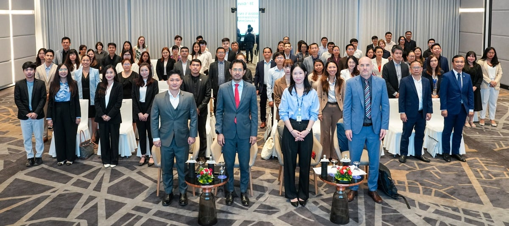
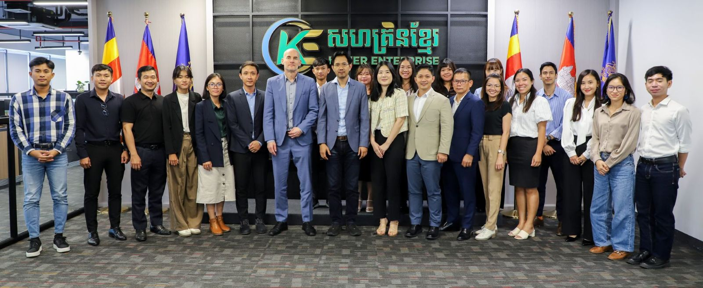
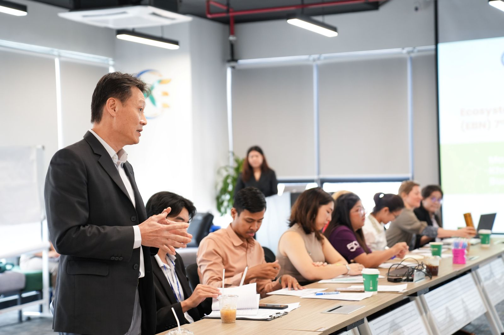

KE Entrepreneur Support Platform is a data driven platform built to map, measure, and strengthen Cambodia's entrepreneurship landscape connecting founders, ESOs, and policymakers with actionable insights.

We believe data can transform how entrepreneurs connect, how support organizations operate, and how Cambodia competes globally.
Visualize the hidden networks between entrepreneurs, ESOs, mentors, and investors across Phnom Penh, Siem Reap, and Battambang.
Track Cambodia's Global Entrepreneurship Index across 14 indicators from opportunity perception to risk acceptance and networking.
Match entrepreneurs to ESOs, funding opportunities, and mentors based on their industry, stage, and location in Cambodia.
Empower policymakers, ESOs, and funders with evidence based insights to allocate resources and design interventions effectively.
Four powerful tools, one unified platform built specifically for Cambodia's entrepreneurship ecosystem.
Map 390+ entrepreneur relationships across Phnom Penh, Siem Reap, and Battambang. Discover key connectors, identify collaboration gaps, and understand how knowledge flows through Cambodia's ecosystem.

Monitor Cambodia's performance across 14 GEI indicators from opportunity perception and startup skills to risk acceptance and networking. See where Cambodia excels and where targeted support can make the biggest impact.

Explore our collection of annual reports, ecosystem research, and global entrepreneurship indices. All resources are open access and publicly available.

Check out our reportsOur AI chatbot understands the Cambodian business landscape. Get answers on regulations, funding, market entry, and entrepreneurship strategy available 24/7 in English and Khmer.
Our data comes from direct field research, community events, and collaboration with entrepreneurs across Cambodia.



Surveyed 390+ entrepreneurs across Phnom Penh, Siem Reap, and Battambang. Conducted community events, interviews, and SNA surveys.
Established the research framework for Cambodia's entrepreneurship ecosystem. Adapted GEI methodology for the Cambodian context.
Built the KE Ecosystem Intelligence Platform integrating SNA visualization, GEI tracking, ecosystem matching, and the AI assistant.
Platform launched with latest data. Continuous updates as the ecosystem evolves new entrepreneur nodes, ESO partners, and GEI scores.
Get free access to SNA maps, GEI dashboards, ecosystem matching, and the AI business assistant, all in one platform built for Cambodian entrepreneurs.